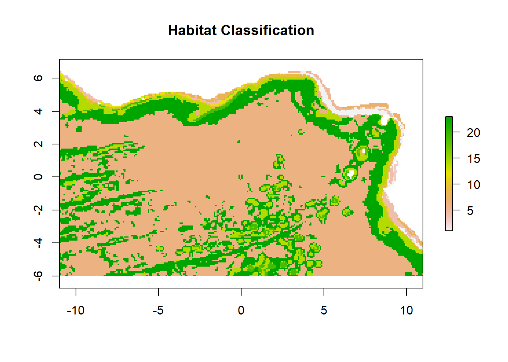

library(fpc)
library(raster)
library(tidyverse)
library(terra)
wd<-getwd()
raw_input_layers_folder<-paste0(wd, "/InputLayers/Unprocessed")
clust_input_layers_folder<-paste0(wd, "/InputLayers")
output_layers_folder<-paste0(wd, "/OutputLayers")
results_folder<-paste0(wd, "/Results")
my_plot_theme <- function(...){
ggplot2::theme_light()+
ggplot2::theme(axis.line = ggplot2::element_line(colour = "grey50"),
axis.title.y = ggplot2::element_text(face="bold", angle=90),
axis.title.x = ggplot2::element_text(face="bold"),
panel.border = element_rect(colour = "black", fill=NA, linewidth=1),
plot.title = ggplot2::element_text(size=14,hjust=0.5),
legend.text.align = 0.5,
legend.title.align = 0,
axis.title = ggplot2::element_text(size=14,vjust=0.5),
axis.text.x = ggplot2::element_text(size = 12,
colour = "black"),
axis.text.y = ggplot2::element_text(colour = "black",
size = 12),
...)
}A guide to developing non-hierarchical habitat classifications using open-source data and software: Combining the input layers
Prepare your working environment
In the event that you’ve closed your R & have lost the objects in the environment since running step 2, read in your clustered rasters.
topo<-raster(paste0(clust_input_layers_folder, "/Topography_4clusters_10km_WGS84.tif"))
prod<-raster(paste0(clust_input_layers_folder, "/Productivity_4clusters_10km_WGS84.tif"))
wms<-raster(paste0(clust_input_layers_folder, "/WaterMassStructure_3clusters_10km_WGS84.tif"))The final step in the habitat classification process is combining the clustered output layers so that for every unique combination of classes, there is a new habitat class.
The assumption is that each class remaining after this merge step represents a different habitat class and thus supports a distinct biological community.
Here we can see a table of the various combination. The more the clusters you allow your input groupings/variables to have, the more variations you’ll have. For our region of interest at the 10 km scale, there are 48 possible different combinations, but only 23 of these actually occur.
all_hab_class_possibilities<-as.data.frame(table(topo[],prod[], wms[])) # have a look at this object if you want to see all the possible combinations
hab_class_table<-subset(as.data.frame(table(topo[],prod[], wms[])), Freq != 0)
hab_class_table Var1 Var2 Var3 Freq
1 1 1 1 441
2 2 1 1 301
3 3 1 1 3
4 4 1 1 3
5 1 2 1 319
6 2 2 1 180
9 1 3 1 110
10 2 3 1 11
11 3 3 1 3
12 4 3 1 4
13 1 4 1 144
14 2 4 1 23
17 1 1 2 4
18 2 1 2 77
19 3 1 2 36
20 4 1 2 1
25 1 3 2 20724
26 2 3 2 2219
27 3 3 2 424
28 4 3 2 8330
33 1 1 3 30
34 2 1 3 1
41 1 3 3 103We want to make a dataframe containing the xy coordinates and the habitat class for each cell. Whilst the raster package does have a merge() function, it doesn’t work in the same way as the ‘Combine’ tool in ArcGIS so therefore we’ll code this section manually.
Firstly, we convert the rasters for each clustered variable into a table and combine so we have x, y, topography class, productivity class and water mass structure class in a large dataframe.
topo_xyz<-as.data.frame(rasterToPoints(topo))%>%
rename("topo_class"="layer")
prod_xyz<-as.data.frame(rasterToPoints(prod))%>%
rename("prod_class"="layer")
wms_xyz<-as.data.frame(rasterToPoints(wms))%>%
rename("wms_class"="layer")
# combine into on xyz1z2z3 etc.
comb_xyz<-topo_xyz%>%
full_join(prod_xyz, by=c("x","y"))%>%
full_join(wms_xyz, by=c("x","y"))%>%
drop_na()
head(comb_xyz) x y topo_class prod_class wms_class
1 -10.958333 6.375 1 2 1
2 -10.875000 6.375 1 1 1
3 2.875000 6.375 1 3 1
4 2.958333 6.375 1 3 1
5 3.041667 6.375 1 3 1
6 3.125000 6.375 1 3 1Next we wan to extract unique combinations of the classes of each of the three variables and assign each a combination id (i.e. in our case, we’ll have 1-23). These are your habitat classes.
final_class_combinations<-as.data.frame(comb_xyz %>%
group_by(topo_class, prod_class, wms_class)%>%
expand())%>%
mutate(combination_id = 1:(nrow(.)))%>%
mutate(unite(., combination, c("topo_class", "prod_class", "wms_class")))
head(final_class_combinations) topo_class prod_class wms_class combination_id combination
1 1 1 1 1 1_1_1
2 1 1 2 2 1_1_2
3 1 1 3 3 1_1_3
4 1 2 1 4 1_2_1
5 1 3 1 5 1_3_1
6 1 3 2 6 1_3_2And then match this with our large dataframe containing all the cells in our region of interest so that each cell has a habitat class assigned.
comb_xyz<-comb_xyz%>%
mutate(unite(., combination, c("topo_class", "prod_class", "wms_class")))
hab_classif_df<-comb_xyz%>%
full_join(final_class_combinations, by="combination")%>%
select(x, y, topo_class.x, prod_class.x, wms_class.x, combination, combination_id)%>%
rename("habitat_class"="combination_id")And now we can convert it into a raster and plot it.
hab_classif_Ras<-rasterFromXYZ(hab_classif_df)Warning in matrix(as.numeric(xyz), ncol = ncol(xyz), nrow = nrow(xyz)): NAs
introduced by coercionhc<-hab_classif_Ras[[5]]
plot(hc, main="Habitat Classification")
And finally we save the raster as a TIFF.
terra::writeRaster(hc, filename=(paste0(output_layers_folder, "/FinalCombinedHabitatClassification_10km_WGS84.tif")), overwrite=TRUE, format="GTiff")And that’s it - you’ve created a benthic non-hierachical habitat classification. Now try it using your own data, and/or a more applicable shpaefule to set your extent in step 1.